경영지도사-1차-2교시(구) (2016-05-07 기출문제)
1과목: 기업진단론
1. 경영분석에 관한 설명으로 옳지 않은 것은?
- 전통적 경영분석은 재무제표를 이용하여 기업실체를 파악하는 데 중점을 둔다.
- 현대적 경영분석은 재무제표뿐만 아니라 비재무자료까지 분석자료의 범위를 확대하고 있다.
- 경영분석을 위한 양적자료들에는 경쟁 상태, 환경, 제품의 품질, 경영자의 능력 등이 있다.
- 현대적 경영분석은 다양한 의사결정 목적에 용한 계량적 분석방법이 활용되고 있다.
- 현대적 경영분석은 기업의사결정에 유용한 정보처리시스템 차원에서 활용되고 있다.
(정답률: 알수없음)

2. 기업이 자산을 얼마나 효율적으로 활용하고 있는가를 평가하는 재무비율은?
- 수익성비율
- 레버리지비율
- 성장성비율
- 유동성비율
- 활동성비율
(정답률: 알수없음)
3. 경영분석을 수행하는 이해관계자와 분석목적의 연결이 올바르지 않은 것은?
- 경영자 - 기업의 강점 및 약점 분석
- 투자자 - 내재가치 측정 및 위험 특성 분석
- 신용평가기관 - 주식 투자등급 평정
- 금융기관 - 기업의 유동성 및 안정성 분석
- 기업인수합병 관련자 - 주식교환비율 분석
(정답률: 알수없음)
4. 경영분석의 한계점에 관한 설명으로 옳지 않은 것은?
- 주로 기업의 과거자료에 근거하여 분석하기 때문에 기업의 미래가치를 예측하기 위한 기초자료가 될 뿐이지 절대적인 평가기준이 될 수는 없다.
- 단순히 회계처리 결과에 따른 수치만으로 기업 간의 정확한 비교와 우열판단이 곤란한 경우도 있다.
- 비율분석 시 어떠한 표준비율을 선택하느냐에 따라 분석결과가 달라질 수 있다.
- 재무제표에 근거한 분석은 물가변동에 따른 기업가치의 변화를 적절하게 반영하지 못하는 한계점이 있다.
- 전문적 회계지식 없이는 경영분석의 결과를 활용하여 기업을 분석 및 평가할 수 없다.
(정답률: 알수없음)
5. 공통형재무제표에 관한 설명으로 옳지 않은 것은?
- 공통형재무제표는 기준시점의 각 재무제표 항목값을 100으로 하여 비교시점의 값을 지수로 표시한 재무제표를 말한다.
- 재무제표를 구성하는 개별 항목의 크기와 상관없이 하나의 공통된 양식으로 나타내어 기업간 상호비교에 유용하다.
- 자금조달의 원천으로서 유동부채, 비유동부채, 자기자본이 어떤 비율로 구성되어 있는가를 파악할 때 유용하다.
- 전체 자산 중 유동자산과 비유동자산이 어떤 비율로 구성되어 있는가를 파악할 때 유용하다.
- 경영성과의 변동원인을 규명하는 데 유용하다.
(정답률: 알수없음)
6. 회계자료에 관한 설명으로 옳지 않은 것은?
- 자본변동표는 일정기간 동안 발생한 소유지분의 변동 내역을 보여준다.
- 손익계산서는 일정기간 동안 기업의 수익에서 비용을 차감한 순이익을 보여준다.
- 현금흐름표는 일정기간 동안 현금의 수취 및 지급으로 인한 현금의 증감 및 기말의 현금을 보여준다.
- 재무상태표는 특정시점에서 기업의 자산, 부채, 자본에 관한 정보를 제공하는 재무보고서이다.
- 이익잉여금처분계산서는 손익계산서와 자본변동표를 연결시키는 중요한 재무제표이다.
(정답률: 알수없음)
7. 손익계산서 자료 이용 시 유의점으로서 옳지 않은 것은?
- 회계처리 방법의 선택에 따라서 비용이 과대 또는 과소 계상되어 결과적으로 이익이 달라질 수 있다는 점을 감안할 필요가 있다.
- 회계적이익은 그 기업의 현금흐름을 나타내는 것이 아니라는 점에 주의할 필요가 있다.
- 손익계산서 항목 중 비현금성 항목에도 주의할 필요가 있다.
- 외부감사인의 감사의견은 단순히 참고만 할 뿐 고려하지 않는다.
- 당기순이익을 많이 올렸다는 것이 반드시 자금사정이 넉넉하다는 것을 의미하지 않는다는 점에 유의할 필요가 있다.
(정답률: 알수없음)
8. 유동성비율과 관련이 없는 것은?
- 원자재의 현금구매
- 재고품의 신용판매
- 재고품의 현금판매
- 매출채권의 회수
- 설비자산투자의 증가
(정답률: 알수없음)
9. 주가이익비율(PER)에 관한 설명으로 옳지 않은 것은?
- 순이익이 동일할 때, PER가 낮은 기업은 시장가격이 저평가 된 상태임을 나타낸다.
- PER는 기업의 성과에 대한 투자자의 평가가 반영된 시장가치 비율이다.
- 일반적으로 PER가 높은 기업은 장래 성장성이 높은 기업으로 간주한다.
- PER가 음(-)의 값을 가질 경우, 절대값으로 변환하여 사용한다.
- PER가 16인 경우, 전기주당순이익이 1,000이면 주가는 16,000에 거래됨을 나타낸다.
(정답률: 알수없음)
10. 자본구조비율에 관한 설명으로 옳지 않은 것은?
- 자본구조비율은 기업의 장기부채상환능력을 평가하는데 유용하다.
- 채권자 입장에서는 기업의 부채비율이 높을수록 많은 이자수익이 발생하기 때문에 부채비율이 높은 기업일수록 안전하다고 평가한다.
- 주주 입장에서 보면 부채의존도가 높을수록 적은 자본으로 기업을 지배할 수 있다.
- 투자수익률이 타인자본비용을 초과할 때에는 주주들의 몫이 확대되는 레버리지효과를 기대할 수 있다.
- 타인자본의 비중이 증가할수록 채권자가 부담하는 기업경영에 따르는 위험은 증가한다.
(정답률: 알수없음)
11. 다음 자료를 이용한 주가이익비율(PER)은?
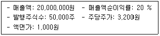
- 10배
- 20배
- 30배
- 40배
- 50배
(정답률: 알수없음)
12. 채권자 입장에서 원금과 이자에 대한 안전도를 나타내는 정태비율은?
- 당좌자산/유동부채
- 자기자본/총자본
- 투자자산/총자산
- 영업이익/이자비용
- 비유동자산/자기자본
(정답률: 알수없음)
13. 유동자산 20억원, 비유동자산 60억원, 유동부채 20억원, 비유동부채 30억원, 자기자본이 30억원일 때, 비유동장기적합률은?
- 100 %
- 150 %
- 200 %
- 250 %
- 300 %
(정답률: 알수없음)
14. 기업의 투자수익과 자본비용의 관계를 나타내는 비율은?
- 매출액순이익률
- 자기자본이익률
- 부채비율
- 자기자본비율
- 이자보상비율
(정답률: 알수없음)
15. 재무비율분석의 유용성에 관한 설명으로 옳지 않은 것은?
- 재무비율분석은 저렴하고 손쉽게 구할 수 있는 재무제표를 이용하여 산출할 수 있다.
- 재무비율분석은 한계점이나 문제점이 없어서 이를 이용한 의사결정 시 오류가 발생하지 않는다.
- 재무비율은 재무제표로부터 논리적 연관성이 있는 두 항목 간의 비율로서 계산이 용이하여 기술적으로 정보화하기 쉽다.
- 적은 수의 재무비율들로도 기업경영의 주요내용을 평가할 수 있다.
- 재무비율분석은 여러 형태의 의사결정에 도움이 되는 풍부한 정보를 제공한다.
(정답률: 알수없음)
16. 유동자산에서 재고자산을 차감한 자산으로 유동성을 측정하는 재무비율은?
- 당좌비율
- 유동비율
- 차입금의존도
- 순운전자본비율
- 총자산회전율
(정답률: 알수없음)
17. 비율분석에 관한 설명으로 옳은 것은?
- 순운전자본비율은 유동자산을 총자산으로 나누어 구한다.
- 현금비율은 현금및현금성자산을 유동부채로 나눈 비율이다.
- 고정재무비보상비율은 매출액을 이자비용과 고정재무비의 합으로 나눈 비율이다.
- 비유동장기적합률은 자기자본 외에 비유동부채까지 확대하여 자본의 수익성을 측정하는 비율이다.
- 비유동비율은 비유동자산을 유동부채로 나눈 비율이다.
(정답률: 알수없음)
18. 유동성을 보여주는 재무비율이 아닌 것은?
- 유동비율
- 당좌비율
- 현금비율
- 자기자본비율
- 순운전자본비율
(정답률: 알수없음)
19. 손익분기점(BEP)분석에 관한 설명으로 옳지 않은 것은?
- BEP분석은 매출액과 비용 및 이익간의 관계에 대한 분석으로 비용-매출액-이익 분석이라고도 한다.
- BEP분석은 고정금융비용으로 인하여 발생하는 재무레버리지 분석에 속한다.
- BEP분석은 기업의 재무계획수립과 비용구조의 특성을 이해하는 데에도 이용되고 있다.
- 만약 모든 영업비용이 변동비라면, BEP분석은 의미가 없게 된다.
- BEP분석은 비용을 변동비와 고정비로 구분할 수 있는 경우를 기본전제로 한다.
(정답률: 알수없음)
20. 매출액순이익률 7 %, 총자산회전율 0.8회, 자기자본은 총자본의 50 %이다. 이 때 총 자산순이익률(ㄱ)과 자기자본순이익률(ㄴ)은?
- ㄱ: 3.6 %, ㄴ: 7.2 %
- ㄱ: 3.6 %, ㄴ: 9.2 %
- ㄱ: 5.6 %, ㄴ: 11.2 %
- ㄱ: 5.6 %, ㄴ: 13.2 %
- ㄱ: 7.6 %, ㄴ: 15.2 %
(정답률: 알수없음)
21. 재무활동으로 인한 현금흐름이 아닌 것은?
- 유가증권의 처분
- 어음 및 사채의 발행
- 차입금의 상환
- 유상감자
- 배당금의 지급
(정답률: 알수없음)
22. 투자분석에 관한 설명으로 옳은 것을 모두 고른 것은?
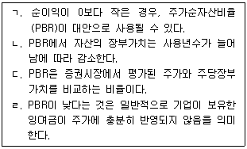
- ㄱ, ㄷ
- ㄴ, ㄷ
- ㄱ, ㄴ, ㄹ
- ㄴ, ㄷ, ㄹ
- ㄱ, ㄴ, ㄷ, ㄹ
(정답률: 알수없음)
23. 비율분석에 관한 설명으로 옳지 않은 것은?
- 정태비율(static ratio) 분석은 재무상태표에 나타난 자료를 대상으로 한 비율분석이다.
- 동태비율(dynamic ratio) 분석은 손익계산서에 나타난 자료를 대상으로 한 비율분석이다.
- 혼합비율(mixed ratio) 분석은 재무상태표 항목과 손익계산서 항목을 동시에 비교하는 비율분석이다.
- 구성비율(component ratio) 분석은 영업이익 또는 비유동자산에 대한 각 항목의 구성비를 표시하는 비율분석이다.
- 관계비율(relative ratio) 분석은 재무제표의 두 항목을 대응시켜 계산한 재무비율이다.
(정답률: 알수없음)
24. 재무비율 중 혼합비율이 아닌 것은?
- 총자산순이익률
- 자기자본이익률
- 재고자산회전율
- 이자보상비율
- 총자본회전율
(정답률: 알수없음)
25. 매출액 130억원, 매출액순이익률 5 %, 총자본 65억원일 때, 총자본순이익률(ROI)은?
- 8 %
- 9 %
- 10 %
- 11 %
- 20 %
(정답률: 알수없음)
26. 기업활동의 결과로 나타난 일정기간 동안의 경영성과를 측정하는 비율은?
- 수익성비율
- 유동비율
- 당좌비율
- 부채비율
- 순운전자본비율
(정답률: 알수없음)
27. 레버리지비율로 활용될 수 없는 것은?
- 자기자본비율
- 순운전자본비율
- 이자보상비율
- EBITDA/이자비용비율
- 차입금의존도
(정답률: 알수없음)
28. 재무비율분석에 관한 설명으로 옳지 않은 것은?
- 재무비율은 경제상황, 경영정책 등에 따라 영향을 받는다.
- 재무비율분석은 비율분석을 효과적으로 수행하기 위해 재무비율을 구성하는 항목의 미래값을 사용한다.
- 재무비율의 해석에는 표준비율이 활용될 수 있다.
- 재무제표의 각 항목 분석에 있어 논리적, 경제적 관계가 분명한 항목을 연결시켜 분석에 활용된다.
- 필요한 경우 재무비율 구성항목 값에 대한 조정이 필요하다.
(정답률: 알수없음)
29. 기업 부실화의 유형이 아닌 것은?
- 자금부족형
- 연쇄도산형
- 방만경영형
- 환경적응실패형
- 가족중심경영형
(정답률: 알수없음)
30. 기업부실의 징후가 아닌 것은?
- 자본잠식의 심화
- 재고자산의 감소
- 매출액의 지속적 감소
- 차입조건이나 금리면에서 불리한 신규차입금 급증
- 영업활동으로 인한 현금흐름의 부족 지속
(정답률: 알수없음)
31. 신용분석의 5C에 관한 설명으로 옳지 않은 것은?
- 경영자의 인격(character)은 대출에 따른 원리금 상환에 대한 기업의 의지를 평가하는 요소로서 경영자의 과거 신용기록, 경영자의 인격에 대한 사회적 평판 등을 평가한다.
- 상환능력(capacity)은 기업이 유동부채에 비해 유동자산을 얼마나 많이 보유하고 있는가를 평가하여 단기부채상환능력을 평가하는데 이용되는 중요한 요소이다.
- 자본력(capital)은 기업의 총자산에서 총부채를 차감한 순자산을 통하여 측정하며, 이를 통해서 원리금을 상환할 수 있는 충분한 자본력을 확보하고 있는가를 평가한다.
- 담보력(collateral)은 차입자가 대출에 대하여 담보로 제공하는 자산의 규모와 질에 의해 평가할 수 있다.
- 경제상황(condition)은 불황, 금융긴축, 금리변동 등이 차입자의 채무상환능력에 미치는 영향을 평가하기 위한 것이다.
(정답률: 알수없음)
32. 기업가치평가에 관한 설명으로 옳지 않은 것은?
- 기업가치는 기업이 보유한 모든 자산에 대한 청구권의 가치를 의미한다.
- 기업가치는 투자결정과 자금조달결정에 의해 영향을 받는다.
- 기업가치는 미래의 기대현금흐름을 위험을 고려한 할인율로 할인한 현재가치라고 할 수있다.
- 주식과 채권을 발행하여 자본을 조달하는 기업은 가중평균자본비용보다는 자기자본비용을 이용하여 기업가치를 산출한다.
- 경제적부가가치(EVA)는 기업이 영업활동을 통하여 얻은 이익에서 자본비용을 차감하여 산출한다.
(정답률: 알수없음)
33. 신용평점제도(credit scoring system)에 관한 설명으로 옳지 않은 것은?
- 신용평점으로 신용위험을 계량화하여 평가할 수 있다.
- 사후관리를 통해 조기경보체제의 수단으로 활용할 수 있다.
- 채무상환능력에 영향을 미치는 주요 평가요소를 선정하고 각 요소의 중요도에 따라 가중치를 부여하여 신용평점을 산출한다.
- 신용평점 산출 시 평가요소의 선정, 가중치부여 및 등급에 따른 점수산출 등에서 주관적 판단이 개입될 수 없다.
- 최종판정을 내리기 위한 예비적 분석방법으로 이용할 수 있다.
(정답률: 알수없음)
34. 알트만의 Z-score 산출시 이용되는 재무비율이 아닌 것은?
- 성장성비율
- 유동성비율
- 수익성비율
- 레버리지비율
- 지급능력비율
(정답률: 알수없음)
35. 기업인수합병(M&A)의 주요 기대효과가 아닌 것은?
- 매출수익의 증대
- 비용과 원가의 절감
- 신규고용의 창출
- 투자소요액의 절감
- 위험과 자본비용의 감소
(정답률: 알수없음)
36. 채권에 관한 설명으로 옳은 것은?
- 만기수익률이 액면이자율보다 높은 경우, 채권은 액면가보다 낮은 가격으로 거래가 이루어진다.
- 채권의 현금흐름의 현재가치와 시장가치를 동일하게 만들어주는 수익률을 무위험수익률이라고 한다.
- 물가가 상승할 것으로 예상되면 채권가격의 하락확률은 낮아진다.
- 채권평가기관은 채권자와 주주를 보호하려는 측면에서 등급을 평정한다.
- 채권수익률의 기간구조는 채권의 듀레이션과 채권수익률 사이의 관계를 보여주는 그래프이다.
(정답률: 알수없음)
37. 기업분석을 위한 평가항목에 관한 설명으로 옳은 것은?
- 제품포트폴리오관리는 시장성장률과 제품수명주기를 이용하여 제품을 평가한다.
- 제품의 시장지위는 제품포트폴리오관리에 의해 설명이 불가능하다.
- 제품구성(product mix)의 평가를 통하여 주력제품을 선별하고 시장성이 없다고 판단되는 제품을 구별한다.
- 제품라이프사이클의 분석을 통하여 각 제품의 수익성과 성장성을 판단할 수 없다.
- 제품수명주기가 성숙기에 있는 경우, 마케팅 믹스의 수정이 필요하지 않다.
(정답률: 알수없음)
38. 기업부실예측모형 중 판별분석에 관한 설명으로 옳은 것은?
- 판별분석은 기업에 따라 다른 재무자료를 사용하기 때문에 주관이 개입할 여지가 있다.
- 판별분석은 경영환경 변화가 많은 경우에 모형의 예측력이 높다.
- 판별분석은 여러 개의 재무비율을 선정하여 이를 종합적으로 분석하여 부실화의 가능성을 예측하는 분석방법이다.
- 알트만의 Z-score모형은 단일변량 분석모형이다.
- 판별분석은 분석대상 기업의 재무변수를 개별적으로 분석하는 방법이다.
(정답률: 알수없음)
39. 여신건전성이 높은 것에서부터 순서대로 나열한 것은?
- 정상, 요주의, 고정, 회수의문, 추정손실
- 정상, 고정, 요주의, 회수의문, 추정손실
- 정상, 요주의, 회수의문, 고정, 추정손실
- 정상, 요주의, 고정, 추정손실, 회수의문
- 정상, 회수의문, 고정, 요주의, 추정손실
(정답률: 알수없음)
40. 영업레버리지도에 관한 설명으로 옳지 않은 것은?
- 영업레버리지도는 매출액이 변동할 때 영업이익이 어느 정도 변동할 것인가를 측정하는 지표이다.
- 영업레버리지도는 고정영업비와 변동영업비의 상대적 크기에 따라 달라진다.
- 총자산 중에서 비유동자산의 비중이 높아질수록 영업레버리지도가 낮아진다.
- 영업레버리지도는 고정영업비가 클수록 높아진다.
- 영업레버리지도는 공헌이익이 클수록 높아진다.
(정답률: 알수없음)
2과목: 조사방법론
41. 다음은 무엇에 관한 설명인가?
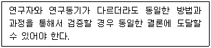
- 수정가능성
- 상호주관성
- 일반성
- 검증가능성
- 인과성
(정답률: 알수없음)
42. 연역적 접근법에 관한 설명으로 옳지 않은 것은?
- 탐색적 연구방법이다.
- 이론적 전제가 필요하다.
- 이론적 결론을 유도하는 방법이다.
- 가설과 함께 수리적 분석이 필요하다.
- 조작 및 경험적 검증이 필요하다.
(정답률: 알수없음)
43. 사회현상의 여러 측면을 설명하기 위한 상호 연관된 진술로서 연구자가 관찰한 것을 일반화하기 위한 것은?
- 이론
- 개념
- 가설
- 법칙
- 명제
(정답률: 알수없음)
44. 원인과 결과의 인과관계에 기반하여 이론을 구성할 때 필요한 조건을 모두 고른 것은?
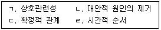
- ㄱ, ㄷ
- ㄱ, ㄴ, ㄷ
- ㄱ, ㄴ, ㄹ
- ㄴ, ㄷ, ㄹ
- ㄱ, ㄴ, ㄷ, ㄹ
(정답률: 알수없음)
45. “종교는 사회적 통합에 영향을 주고 사회적 통합은 자살률에 영향을 미칠 것이다.”라는 가설에서 '사회적 통합'이라는 변수의 성격은?
- 매개변수
- 외적변수
- 선행변수
- 억제변수
- 왜곡변수
(정답률: 알수없음)
46. 다음 설명 중 옳은 것을 모두 고른 것은?
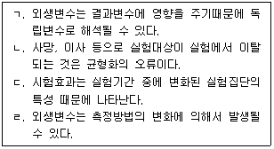
- ㄱ, ㄷ
- ㄱ, ㄹ
- ㄴ, ㄷ
- ㄴ, ㄹ
- ㄷ, ㄹ
(정답률: 알수없음)
47. 가설이 아닌 것은?
- 부모의 학력이 높을수록 자녀의 학력도 높아진다.
- 자녀학업을 위한 가족분리는 바람직하지 않다.
- 민주적 조직보다 독재적 조직의 의사결정 속도가 빨라진다.
- 고객만족도가 높은 기업의 재무적 성과가 더 높아진다.
- 리더십형태에 따라 직원의 직무만족도가 달라진다.
(정답률: 알수없음)
48. 다음 중 연구문제의 진행과정에 포함되지 않는 것은?
- 연구문제의 선정
- 선행연구의 고찰
- 연구가설의 설정
- 연구문제의 해결
- 연구문제의 코딩
(정답률: 알수없음)
49. 탐색조사에 관한 내용이 아닌 것은?
- 기존의 2차 자료를 검토한다.
- 관찰도구의 활용을 통해 관찰을 실시한다.
- 집중적 분석을 통하여 해결책을 모색한다.
- 전문적인 지식을 갖춘 전문가를 면접한다.
- 변수들 간에 인과관계가 존재하는지 파악한다.
(정답률: 알수없음)
50. 두 변수 간의 인과관계를 추론하는 데 있어서 필요한 조건이 아닌 것은?
- 원인변수가 변화한 후에 결과변수의 변화가 일어나야 한다.
- 외생변수 통제를 하지 않아도 된다.
- 두 변수는 동반해서 순차적으로 발생하여야 한다.
- 대체 가능한 설명변수가 없어야 한다.
- 결과변수를 설명할 수 있는 다른 원인변수가 없어야 한다.
(정답률: 알수없음)
51. 흡연과 폐암의 인과관계를 증명하고자 할 때 사용하며, 외생변수의 통제를 강조하는 조사방법은?
- 관찰조사
- 사례조사
- 델파이조사
- 실험조사
- 패널조사
(정답률: 알수없음)
52. 지난 10년간 광고비와 매출액 자료를 활용하여, 두 변수 관계의 변화를 추적하기 위해 사용하는 조사방식은?
- 서베이
- 패널조사
- 종단조사
- 판별분석
- 구조방정식모형
(정답률: 알수없음)
53. 투사법에 관한 설명으로 옳지 않은 것은?
- 자극이 조직화되어 객관성이 높다.
- 자극으로 사용할 수 있는 도구가 많은 것이 특징이다.
- 비체계적-비공개적 의사소통방법이다.
- 응답자가 명백하게 자신의 감정이나 태도를 드러내지 않을 경우에 활용한다.
- 보조물의 유형에 따라 단어연상법, 문장완성법, 스토리텔링기법 등으로 나눠진다.
(정답률: 알수없음)
54. 척도의 유형이 같은 것끼리 연결한 것은?
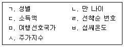
- ㄱ, ㄴ
- ㄴ, ㅅ
- ㄷ, ㄹ
- ㅁ, ㅂ
- ㅂ, ㅅ
(정답률: 알수없음)
55. 설문지 작성순서 중 질문순서의 결정 이후에 실시하는 절차는?
- 필요한 정보의 결정
- 자료수집 방법의 결정
- 설문지의 코딩
- 개별항목의 내용결정
- 개별항목의 완성
(정답률: 알수없음)
56. 등간척도를 이용한 측정방법이 아닌 것은?
- 등급법
- 어의차이 척도법
- 고정총합 척도법
- 스타펠 척도법
- 리커트형 척도법
(정답률: 알수없음)
57. 질문지를 작성하는 방법에 관한 설명으로 옳은 것을 모두 고른 것은?
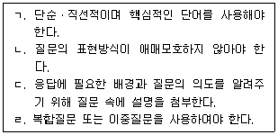
- ㄱ, ㄴ
- ㄴ, ㄷ
- ㄷ, ㄹ
- ㄱ, ㄴ, ㄹ
- ㄴ, ㄷ, ㄹ
(정답률: 알수없음)
58. 설문지를 설계할 때 고려해야 할 사항으로 옳지 않은 것은?
- 응답이 곤란한 질문이나 민감한 주제에 대해서도 깊이 있게 질문해야 한다.
- 응답자들이 전문용어를 이해할 것으로 가정해서는 안 된다.
- 응답항목들 간에 내용상 중복이 있어서는 안된다.
- 선택형 질문은 가능한 모든 응답을 제시해 줄 수 있도록 작성해야 한다.
- 조사자가 임의로 가정하고 설문지 내용을 변경하게 해서는 안 된다.
(정답률: 알수없음)
59. 설문결과를 코딩지에 기록할 때 유의사항이 아닌 것은?
- 항목을 분석 가능한 숫자로 표현한다.
- 한 칸에는 단지 하나의 숫자가 기록되어야 한다.
- 취득하지 못한 자료를 처리할 경우에는 A, B와 같은 알파벳을 이용하여 구분을 명확하게 한다.
- 응답의 세분화된 수를 고려하여 항목별 칸의 수를 결정하여야 한다.
- 숫자로 응답된 자료를 처리할 때 단위가 가장 큰 수치를 고려하여 칸을 배정하여야 한다.
(정답률: 알수없음)
60. 전수조사와 표본조사에 관한 설명으로 옳지 않은 것은?
- 전수조사는 표본조사에 비해 비표본오차가 크다.
- 표본조사는 전수조사에 비해 표본오차가 크다.
- 조사과정에서 조사대상이 파괴될 수 있는 확률이 높을 경우, 전수조사보다는 표본조사가 필요하다.
- 올바른 모수추정이 어려운 경우 전수조사가 필요하다.
- 조사기간 동안 조사대상에게 영향을 미치는 사회현상의 변화가 있는 경우 전수조사를 실시해야 한다.
(정답률: 알수없음)
61. 표본의 추출에 관한 설명으로 옳지 않은 것은?
- 전수조사는 표본조사보다 비용과 시간이 많이 들기 때문에 표본조사를 하는 경우가 많다.
- 전수조사는 표본오류를 잘 통제하면 표본조사보다 더 정확한 모수값을 얻을 수 있다.
- 확률표본추출은 표본프레임이 있는 경우에 가능하다.
- 확률표본추출로 추정된 모수값보다 비확률표본추출에서 추정된 모수값이 더 정확할 수도 있다.
- 대규모 상업조사는 비확률표본추출 활용에 적합하다.
(정답률: 알수없음)
62. 다음은 어떤 표본추출방법의 절차인가?
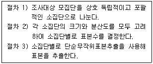
- 비례층화추출
- 할당표본추출
- 군집표본추출
- 불비례층화추출
- 단순무작위표본추출
(정답률: 알수없음)
63. 대학생의 학교생활만족도를 조사하기 위해 전국에서 몇 개의 대학을 선정하고, 이 대학들로부터 몇 개의 학과와 학년을 선정한 후 해당되는 대학생들을 모두 조사하려고 한다. 이 경우에 사용되는 표본추출방법은?
- 단순무작위 표본추출
- 계통표본추출
- 층화표본추출
- 군집표본추출
- 할당표본추출
(정답률: 알수없음)
64. 추출된 표본이 인구통계학적 특성에서 어느 한 부분으로 편중되지 않고 모집단의 특성이 잘 반영되도록 모집단의 특성에 비례하여 표본을 추출하는 방법은?
- 계통표본추출
- 단순무작위표본추출
- 군집표본추출
- 할당표본추출
- 판단표본추출
(정답률: 알수없음)
65. 서베이 조사의 문제점이 아닌 것은?
- 소비자들이 제품지식을 갖지 못하는 경우에는 의사결정에 유용한 마케팅정보를 찾아내기 어렵다.
- 보조물이 제공되어야 하는 서베이 조사는 효율적인 조사 진행을 어렵게 한다.
- 면접조사원이 이용되는 경우 면접조사원의 자료수집과정에 대한 통제가 쉽지 않다.
- 조사를 반복적으로 실시할수록 조사대상자의 탈락 때문에 표본이 점차 작아져 버리는 특성이 있다.
- 응답자별 조사시간의 제한 등으로 수집할 수 있는 정보의 양에 한계가 있다.
(정답률: 알수없음)
66. 조사를 위한 표본을 추출하는 방식 중 성격이 다른 것은?
- 층화무작위표본추출
- 단순무작위표본추출
- 군집표본추출
- 체계적 무작위표본추출
- 할당표본추출
(정답률: 알수없음)
67. 실험설계의 경우 외생변수의 영향을 철저하게 통제하거나 제거할 수 있는 방법이 아닌 것은?
- 제거 (elimination)
- 균형화(matching)
- 상쇄(counter balancing)
- 무작위화(randomization)
- 재검사법(retest method)
(정답률: 알수없음)
68. 다음 설명에 해당하는 연구조사방법은?
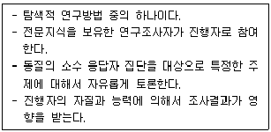
- 패널조사
- 사례조사
- 표적집단면접법
- 서베이
- 투사법
(정답률: 알수없음)
69. 측정을 위해 개발한 도구가 측정하고자 하는 대상의 정확한 속성값을 얼마나 포괄적으로 포함하고 있는가를 나타내는 타당도는?
- 내용타당도
- 기준타당도
- 예측타당도
- 외적타당도
- 수렴타당도
(정답률: 알수없음)
70. 갱서베이(Gang Survey) 조사에 관한 설명으로 옳은 것은?
- 응답자가 실제상황 하에서 제품을 장기간 사용하도록 한 후, 소비자 반응을 조사하는 방법이다.
- 일부 지역에 먼저 제품을 출시하여 소비자들의 반응을 검토하는 시장조사방법이다.
- 응답자들을 본인이 원하는 시간대에 자유롭게 여러 장소에 나누어서 모이게 한 후, 자료를 수집하는 조사방법이다.
- 소비자가 실제 제품을 구매하는 과정이나 사용하는 과정을 관찰하고, 내용을 정리하면서 시사점을 찾아내는 방법이다.
- 응답자들을 정해진 시점에 일정한 장소에 모두 모이게 한 후, 조사 담당자가 응답자들로부터 자료를 수집하는 조사방법이다.
(정답률: 알수없음)
71. 자료의 수집방법 중 관찰법에 관한 설명으로 옳은 것은?
- 질문지를 사용하여 응답자가 스스로 그 질문에 기재해 넣는 방법이다.
- 조사원이 면접을 통하여 기재해 넣는 방법이다.
- 행동패턴을 기록하고 분석하여 조사대상에 대한 정보를 체계적으로 정리하는 방법이다.
- 상대적으로 적은 비용으로 다수의 응답자들로부터 풍부한 자료를 손쉽게 수집할 수 있는 방법이다.
- 자료 수집과정에서 시간이 절약되고 분석이 즉시 이뤄지는 장점이 있다.
(정답률: 알수없음)
72. 혼란변수(confounding variable)의 통제방법이 아닌 것은?
- 무작위화(randomization)
- 균형화(matching)
- 공분산분석(ANCOVA)에 의한 보정
- 부트스트랩(bootstrap)
- 실험설계에 의한 통제
(정답률: 알수없음)
73. 측정을 할 때 개입되는 오류의 원천이 아닌 것은?
- 측정하고자 하는 현상과 측정의 숫자체계 간의 직접 연결
- 측정방법이나 측정도구의 불완전성
- 측정된 자료의 분류와 처리과정에서의 오류
- 측정자와 측정대상 간의 상호작용
- 측정도구와 측정대상 간의 상호작용
(정답률: 알수없음)
74. 2010년도에 A의과 대학교를 졸업한 동기생들을 대상으로 경제적 태도변화를 연구하기 위해 매년 일정한 시점에 조사하는 방법은?
- 사례조사
- 코호트조사
- 집단조사
- 회원조사
- 탐색조사
(정답률: 알수없음)
75. 신뢰성을 측정하는 방법으로 옳지 않은 것은?
- 반분법
- 검사 –재검사 방법
- 공통분산검사
- 복수양식 검사
- 내적일관성 검사
(정답률: 알수없음)
76. 서로 다른 개념을 측정했을 때 얻어진 측정치들 간의 상관관계가 낮게 형성되어야 하는 타당도의 유형은?
- 집중타당도
- 판별타당도
- 이해타당도
- 예측타당도
- 내용타당도
(정답률: 알수없음)
77. 판별분석에 관한 설명으로 옳지 않은 것은?
- 명목척도나 서열척도로 측정된 범주형 변수들 간의 연관성을 분석하는 방법이다.
- 독립변수와 종속변수의 선형관계를 가정한다.
- 카드고객의 소비행태나 대출행태분석을 통해 고객의 신용등급이나 고객이탈여부 등을 분석하는 데 유용한 도구이다.
- 독립변수들 간에는 다중공선성이 없거나, 있더라도 아주 작아야 한다.
- 독립변수는 양적변수이고, 종속변수는 범주형변수이다.
(정답률: 알수없음)
78. (주)대한백화점에서 여러 판매촉진방법에 따른 매출액의 차이분석을 규명하고자 하는 경우에 사용할 분석기법은?
- 상관관계분석
- 분산분석
- 군집분석
- 요인분석
- 컨조인트분석
(정답률: 알수없음)
79. 조사보고서 양식과 작성요령에 관한 설명으로 옳은 것은?
- 제목에는 조사제목과 의뢰자의 이름과 조사수행자의 이름을 기록하되 보고서를 수령할 사람은 나타내지 않는다.
- 조사의 한계점은 결론에 적을 부분이기 때문에 본문에 기록해서는 안 된다.
- 서론에는 조사의 목적은 제시하되 연구가설은 포함시키지 않는다.
- 보고서 전문성 확보를 위해 조사관련 전문적 용어를 최대한 많이 사용해야 한다.
- 결론과 제안에서는 결과와 요구되는 정보를 연계해서 행동과 판단에 대한 의견을 제시한다.
(정답률: 알수없음)
80. 조사원 교육에 있어서 고려하여야 할 사항이 아닌 것은?
- 조사원들의 조사일정배정에 관한 방법
- 조사원들의 성실한 조사 수행여부 확인 방법
- 설문지에서 문제가 발생하였을 경우 처리방법
- 설문항목에 대한 조사원의 견해 표출
- 응답자들이 제기한 질문에 대한 답변
(정답률: 알수없음)
3과목: 영어
81. 밑줄 친 부분과 의미가 가까운 것은?
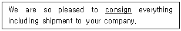
- consecrate
- comply
- consolidate
- compare
- commit
(정답률: 알수없음)
82. A, B에 들어갈 표현으로 옳은 것은?
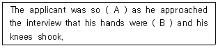
- A: afraid, B: agitated
- A: impressed, B: clean
- A: depressed, B: adopted
- A: nervous, B: clammy
- A: enthralled, B: credulous
(정답률: 알수없음)
83. 밑줄 친 부분과 의미가 가까운 것은?
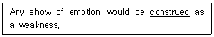
- built
- proposed
- interpreted
- ignored
- forbidden
(정답률: 알수없음)
84. ( )에 들어갈 표현으로 옳은 것은?
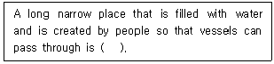
- brook
- sea
- canal
- valley
- stream
(정답률: 알수없음)
85. ( )에 들어갈 표현으로 옳은 것은?
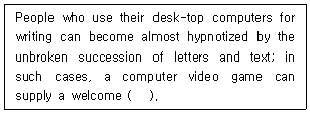
- diversion
- look ahead
- insight
- handicap
- predicament
(정답률: 알수없음)
86. 밑줄 친 부분 중 어법상 옳지 않은 것은?
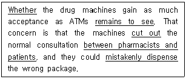
- Whether
- remains to see
- cut out
- between pharmacists and patients
- mistakenly dispense
(정답률: 알수없음)
87. ( )에 들어갈 표현으로 옳은 것은?
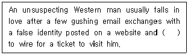
- persuades
- persuaded
- has persuaded
- is persuaded
- was persuading
(정답률: 알수없음)
88. 어법상 옳지 않은 것은?
- Caught in the hurricane, the ship sent an SOS signal.
- When taking a bath, don't use a hair dryer.
- The president being absent, the monthly meeting was postponed.
- Sit upright with your legs crossed.
- Being no seat in the bus, we kept standing all the way.
(정답률: 알수없음)
89. 어법상 옳지 않은 것은?
- Immunity is the power of the body to resist and overcome infection.
- The harbor should be enough spacious for ships to maneuver.
- Shopping in the downtown area of the city has improved a lot in recent years.
- It is certain that the instructor has not yet decided when the paper is due.
- The box on the table can be opened only with a special driver.
(정답률: 알수없음)
90. 어법상 옳지 않은 것은?
- My dad has such big feet that he can't find shoes to fit.
- Employees were informed of Mr. Kim that they could leave work early because of the holiday.
- They were believed to be the best couple in the dancing party.
- Could you tell me what the weather is like at the moment?
- The mayor promised the parents to supply the textbooks for their children.
(정답률: 알수없음)
91. ( )에 들어갈 표현으로 옳은 것은?
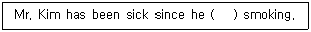
- had started
- is starting
- will start
- starts
- started
(정답률: 알수없음)
92. ( )에 들어갈 표현으로 옳은 것은?
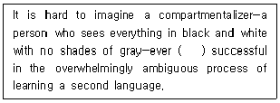
- be
- been
- being
- to be
- to have been
(정답률: 알수없음)
93. 밑줄 친 부분 중 어법상 옳지 않은 것은?
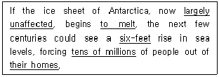
- largely unaffected
- to melt
- six-feet
- tens of millions
- their homes
(정답률: 알수없음)
94. 어법상 옳지 않은 것은?
- It is not what he says that annoys me but the way he says it.
- It is one thing to be learned; it is quite other to be wise.
- The speed of light is faster than that of sound.
- It is Jack who is to blame.
- The gentleman is a friend of mine.
(정답률: 알수없음)
95. 밑줄 친 부분 중 어법상 옳지 않은 것은?
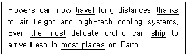
- travel
- thanks to
- the most
- ship
- most places
(정답률: 알수없음)
96. ( )에 들어갈 표현으로 옳은 것은?
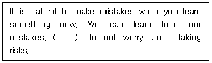
- In other words
- In addition
- However
- Fortunately
- On the other hand
(정답률: 알수없음)
97. A, B, C에 들어갈 표현으로 옳은 것은?
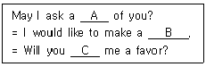
- A: favor, B: request, C: do
- A: favor, B: favor, C: show
- A: favor, B: request, C: give
- A: request, B: favor, C: send
- A: request, B: request, C: provide
(정답률: 알수없음)
98. ( )에 들어갈 표현으로 옳은 것은?
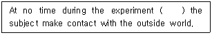
- had
- do
- has
- is
- can
(정답률: 알수없음)
99. 밑줄 친 부분의 해석이 옳지 않은 것은?
- I met my old friend out of the blue.
= I suddenly met my old friend. - I had to take the second job to make both ends meet.
= I had to allow two things to meet together. - The manager gave us the green light for the new project.
= The manager let us start the project. - I've kind of got my hands full right now.
= I am very busy doing my job right now. - After the car accident, his nose was black and blue for days.
= His nose was dark and bruised from being hit.
(정답률: 알수없음)
100. 어법상 ( )에 들어갈 표현으로 옳은 것은?
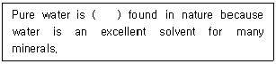
- not to
- nor
- never
- neither
- no
(정답률: 알수없음)
101. 밑줄 친 부분과 의미가 가까운 것은?
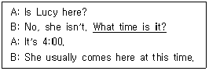
- Do you have time?
- Do you have a good watch?
- Do you know her job?
- Do you have the time?
- Do you know her name?
(정답률: 알수없음)
102. 대화의 내용이 어법상 자연스럽지 않은 것은?
- A: May I help you?
B: No, thanks. I'm just browsing. - A: Do you play the guitar a lot?
B: Not any more. I used to when I was young. - A: You don't like shopping very much, do you?
B: Yes, not at all. - A: You like guys who are handsome and intelligent.
B: Who doesn't? I hope I could meet one of them. - A: What's the noise? It sounds like an avalanche!
B: It can't be. There aren't any mountains nearby.
(정답률: 알수없음)
103. ( )에 들어갈 표현으로 옳은 것은?
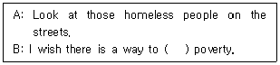
- stamp out
- be familiar with
- go through with
- muster up
- get wind of
(정답률: 알수없음)
104. 빈 칸에 들어갈 표현으로 옳은 것은?
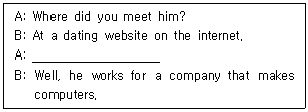
- Do you know what he likes?
- What's he like?
- Do you know how he looks?
- What does he do?
- Where does he live?
(정답률: 알수없음)
1⑤. 빈 칸에 들어갈 표현으로 옳은 것은?
- When are you going to leave?
- What kind of trip are you going to take?
- Why are you going to go there?
- Where are you going to stay?
- How long are you going to stay?
(정답률: 알수없음)
106. 빈 칸에 들어갈 표현으로 옳은 것은?
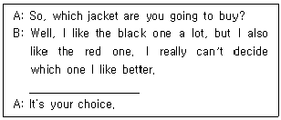
- Do you really think so?
- What do you think?
- Do you really agree with me?
- Are you wearing a jacket?
- How do you get that?
(정답률: 알수없음)
107. 빈 칸에 들어갈 표현으로 옳은 것은?
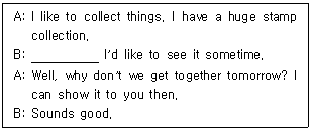
- No kidding?
- You're absolutely right.
- Yes, I'm fine.
- Oh, finally I have it.
- Wow, anything else?
(정답률: 알수없음)
108. 밑줄 친 관용어와 의미가 가까운 것은?
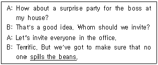
- reveals a secret by accident
- is afraid or cowardly
- goes crazy or becomes silly
- is in a dilemma
- forgets the promise
(정답률: 알수없음)
109. 빈 칸에 들어갈 표현으로 옳은 것은?
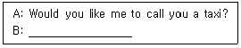
- No, it's not far. Thanks.
- Yes, I will call you later.
- You're welcome.
- No, I left mine at home.
- Sorry, we are fully booked.
(정답률: 알수없음)
110. 빈 칸에 들어갈 표현으로 옳은 것은?
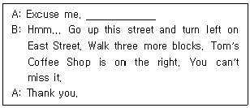
- Whom are you going to meet at Tom's Coffee Shop?
- Have you ever been to Tom's Coffee Shop?
- When do you get to Tom's Coffee Shop?
- Would you show me the way to Tom's Coffee Shop?
- What are you doing at Tom's Coffee Shop?
(정답률: 알수없음)
111. 빈 칸에 들어갈 표현으로 옳은 것은?
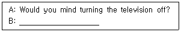
- Of course not.
- That's incredible.
- I can't understand.
- You can say that again.
- What have you been up to?
(정답률: 알수없음)
112. 다음 글의 제목으로 적합한 것은?
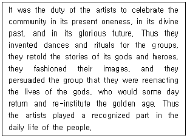
- Artists' Private Resources
- Artists' Public Functions
- How Artists Are Born
- Artists Are Made, Not Born
- Artists' Private Role
(정답률: 알수없음)
113. 다음 (A) ∼ (E) 중 지시하는 대상이 다른 하나는?
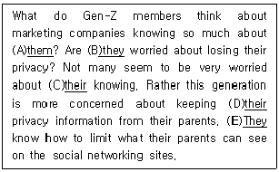
- (A)them
- (B)they
- (C)their
- (D)their
- (E)They
(정답률: 알수없음)
114. 다음 글의 내용과 일치하지 않는 것은?
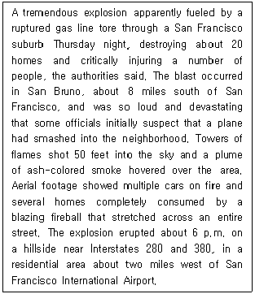
- 샌프란시스코 교외 지역에서 목요일에 발생한 사고에 대한 설명이다.
- 처음에 비행기가 주택가에 충돌하면서 사고를 유발하였다.
- 사고 지점은 샌프란시스코 국제공항 서쪽 2마일 거리의 주택가이다.
- 주택 20여 채가 파손되고 많은 사람이 중상을 입었다고 당국에서 발표하였다.
- 화염이 50피트 높이로 공중에 치솟았고 인근지역이 연기로 뒤덮였다.
(정답률: 알수없음)
115. 다음 글의 내용과 일치하지 않는 것은?
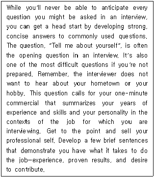
- 면접에서 예상되는 일반적인 질문에 대하여 사전에 준비하는 것은 도움이 된다.
- 면접 시 자기소개는 준비하지 않은 경우 가장 어려운 질문이 될 수도 있다.
- 업무에 필요한 경험, 입증된 성과, 기여도가 있음을 보여주는 것이 좋다.
- 자기소개 시 업무와 관련된 경험, 기술, 성격을 요약해서 언급하는 것이 좋다.
- 면접 시 제한된 시간에 자신의 세세한 모든 면을 최대한 보여주는 것이 유리하다.
(정답률: 알수없음)
116. 다음 글의 내용과 일치하는 것은?
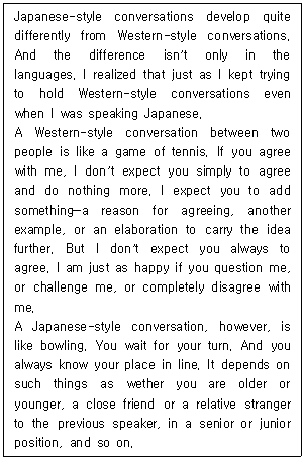
- 일본식 대화법과 서구식 대화법의 차이는 언어의 상이함에서 비롯된다.
- 글쓴이는 일본어를 사용할 때에는 일본식 대화법으로, 영어를 사용할 때에는 서구식 대화법을 사용한다.
- 서구식 대화법에서는 상대방의 의견에 동의하는 것이 일반적인 현상이다.
- 서구식 대화법에서 대화 중 질문을 하거나 의문을 제기하면 상대방의 기분을 상하게 만들기 쉽다.
- 일본식 대화법에서는 연령이나 신분에 따라 말하는 순서와 차례가 일반적으로 정해져 있다.
(정답률: 알수없음)
117. 다음 글의 내용과 일치하지 않는 것은?
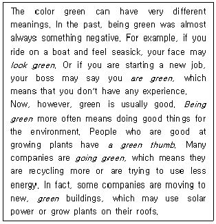
- 초록색은 영어에서 다중적인 의미로 쓰인다.
- 과거에는 초록색이 부정적인 의미로 사용되었다.
- 오늘날 초록색은 환경 친화적인 의미를 가진다.
- 식물을 잘 키우는 사람을 표현할 때에도 초록색의 의미를 사용한다.
- 초록색은 경험이 풍부한 사람을 의미하기도 한다.
(정답률: 알수없음)
118. 글의 흐름으로 보아, 주어진 문장이 들어가기에 적절한 곳은?
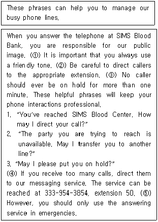
- ①
- ②
- ③
- ④
- ⑤
(정답률: 알수없음)
119. 다음 글의 내용과 일치하는 것은?
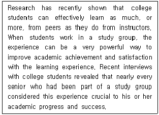
- 최근 연구에 따르면 대학생들은 학우보다는 교사로부터 더 많이 배울 수 있다.
- 스터디 그룹을 통해 학업 성취를 이루기 어렵다.
- 대학 졸업반 학생들은 자신의 성공과 진로를 위해 열심히 노력한다.
- 스터디 그룹이 효과적으로 이루어지면, 학업성취도와 만족도 향상에 큰 영향을 미칠 수있다.
- 최근 대학생들의 인터뷰에서 자신의 학업 성취와 성공을 가장 중요시하는 것으로 나타났다.
(정답률: 알수없음)
120. 다음 글의 주제로 적합한 것은?
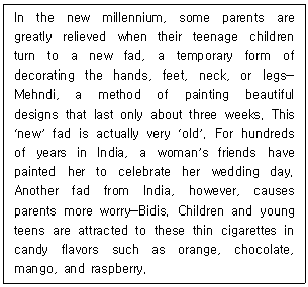
- Meaning of Mehndi
- Meaning of Bidis
- Fads from India
- Woman's Fashion
- The Beauty
(정답률: 알수없음)